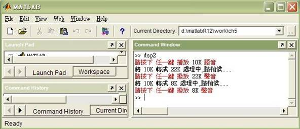
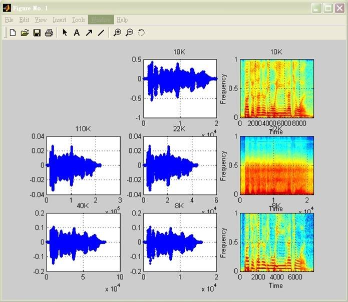
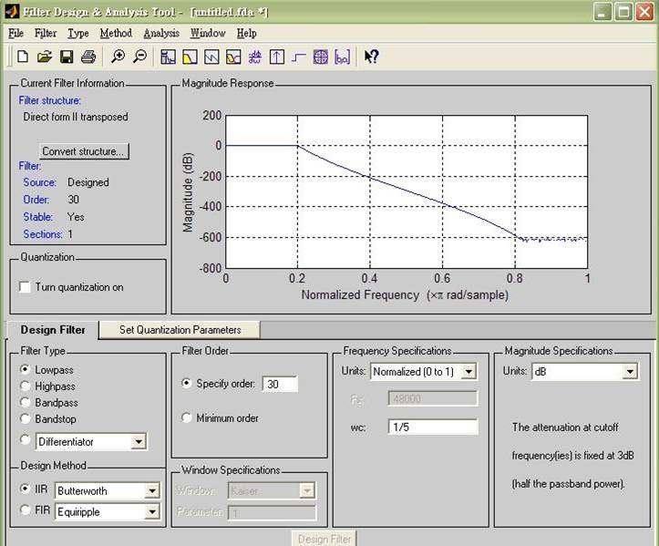
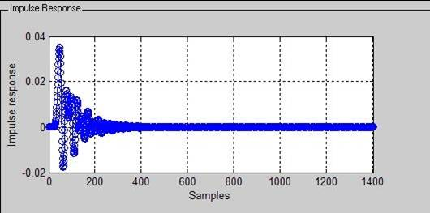
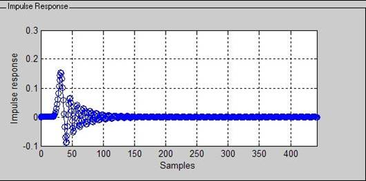
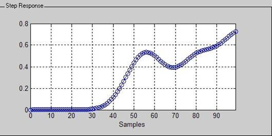
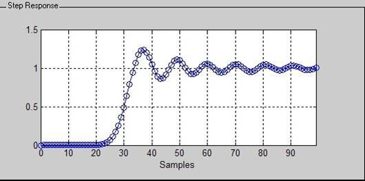
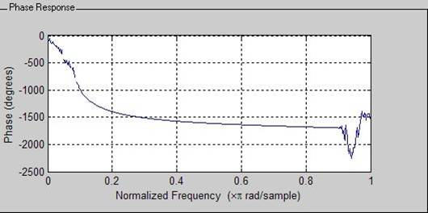
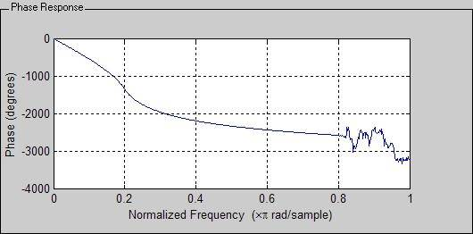

Discrete-Time Processing
An implementation of changing the 10K sampling-rate-voice to
- 22K sampling-rate-voice
- 8K sampling-rate-voice
Requirements
- Matlab 6.5
- CoolEdit 2000
Programming
%..............................................................................
% Filename : dsp2.m
% Author : Ching-Wen,Lai
% Running : running this .m file in Matlab
% Description : Changing the Sampling Rate
%
% Date : 12/02/2002 ver2.0
% 1. 更正 22K 的 butter filter 成 stable – 減少爆音現象
% 2. 更正 8K butter filter , Wc=1/5 (取最小的)
% 3. 更正 10K Plot 錯誤 與 新增 頻 域 圖 形
% Requirement : speech_10K.wav (PCM 格式 ; sampling rate = 10K)
%
% Result : 1. speech_22K.wav (PCM 格式 ; sampling rate = 22K)
% 2. speech_8K.wav (PCM 格式 ; sampling rate = 8K)
%
% References : Chapter 4.6 Changing The Sampling Rate using
% Discrete-Time Processing
% Book::Discrete-Time Signal Processing
% (ISBN: 0-13-0834443-2 )
%
% Comment : 使用 矩陣方式 處理 ,比 用Loop方式處理(for...), 速度快很多
%..............................................................................
clear all;
fs = 10000; % set sampling rate
%==============================================================================
% 輸入 處理 10 K 語音資料
%==============================================================================
[ x,fs ] = wavread('speech_10K.wav'); % loading the PCM speech file
len=length(x);
k=input('請按下 任一鍵 播放 10K 語音'); % playing it
wavplay(x,fs);
%==============================================================================
% 進行 DSP 處理 (10K -> 110K --> 22K )
%==============================================================================
fprintf('將 10K 轉成 22K 處理中,請稍候...\n');
%..............................................................................
% [ Up sampling ] 10K -> 110K
% x_110K = { x[ n/len ] , n= 0,|L|,|2l|,...
% { 0, Otherwise , 參考課本 4.84 式(p.172)
%..............................................................................
x_110K= [ zeros(len,10) x ];
x_110K = x_110K'; % 轉置該矩陣 成 課本 4.84式
%..............................................................................
%
% 使用 時域 Butterworth 數位濾波器 做 訊號重建
% 同頻域 sinc 方式重建 ( 課本 4.88式 )
%..............................................................................
[ b ,a ] = butter( 19 , 1/11); % 1/11 與 1/5 取最小的
x_110K = filter(b,a,x_110K(:));
%..............................................................................
% [ Down sampling ] 110K -> 22K
% X_110K[n] = X_22K [ nM ] , M = 1/5
% 課本 4.71式
%..............................................................................
x_22K = reshape(x_110K(:),5,(len*11)/5); % 重新安排矩陣的形狀
x_22K=x_22K'; % 轉置該矩陣
x_22K = x_22K(:, 5 ) ; % M= 1/5, 取出第五行
%==============================================================================
% 輸出 處理結果 ( 10 K --> 22K )
%==============================================================================
k=input('請按下 任一鍵 撥放 22K 聲音');
wavplay( x_22K(:), fs*2.2 );
wavwrite( x_22K(:), fs*2.2 ,16,'speech_22K.wav');
%==============================================================================
% 進行 DSP 處理 (10K -> 40K --> 8K )
%==============================================================================
fprintf('將 10K 轉成 8K 處理中,請稍候...\n');
%..............................................................................
% [ Up sampling ] 10K -> 40K
% x_40K = { x[ n/len ] , n= 0,|L|,|2l|,...
% { 0, Otherwise , 參考課本 4.84式(p.172)
%..............................................................................
x_40K= [ zeros(len,3) x ];
x_40K = x_40K'; % 轉置該矩陣
%..............................................................................
%
% 使用 時域 Butterworth 數位濾波器 做 訊號重建
% 同頻域 sinc 方式重建 ( 課本 4.88式 )
%..............................................................................
[ b ,a ] = butter( 30 , 1/5); % 1/5 與 1/4 取最小的
x_40K = filter(b,a,x_40K(:));
%..............................................................................
% [Down sampling ] 40K -> 8K
% X_110K[n] = X_22K [ nM ] , M = 1/5
% 課本 4.71式
%..............................................................................
x_8K = reshape(x_40K(:),5,(len*4)/5); % 重新安排矩陣的形狀
x_8K=x_8K'; % 轉置該矩陣
x_8K = x_8K(:, 5 ) ; % M=1/5, 取出第五行
%==============================================================================
% 輸出 處理結果 ( 10 K --> 8K )
%==============================================================================
k=input('請按下 任一鍵 撥放 8K 聲音');
wavplay( x_8K(:), fs*0.8 );
wavwrite( x_8K(:), fs*0.8 ,16,'speech_8K.wav');
%==============================================================================
% 繪出 各處理階段的 訊號 ( 10K/ 110K/ 22K/ 40K/ 8K ), 方便 比較
%==============================================================================
subplot(332), plot(x(:),'.'),grid % 繪出 原始 10K 訊號
title('10K')
subplot(333), specgram(x(:)),grid % 繪出 10K 訊號 頻譜圖
title('10K')
subplot(334), plot(x_110K,'.'),grid % 繪出 110K 訊號
title('110K')
subplot(335), plot(x_22K,'.'),grid % 繪出 22K 訊號
title('22K')
subplot(336), specgram(x_22K(:)),grid % 繪出 22K 訊號 頻譜圖
title('22K')
subplot(337), plot(x_40K,'.'),grid % 繪出 40K 訊號
title('40K')
subplot(338), plot(x_8K,'.'),grid % 繪出8K 訊號
title('8K')
subplot(339), specgram(x_8K(:)),grid % 繪出 8K 訊號 頻譜圖
title('8K')
shg
Running
Screenshot

Step-by-Step
| Step | Prompt | Description | Audio |
|---|---|---|---|
| 1 | >> dsp3 | Launch the program of Changing The Sampling Rate | |
| 2 | 請按下 任一鍵 播放 10K 語音 | Play the original voice before proceeded | |
| 3 | 將 10K 轉成 22K 處理中,請稍候... | Changing the sample rate to 22K voice | |
| 4 | 請按下 任一鍵 播放 22K 語音 | Play the output voice after proceeded | |
| 5 | 將 10K 轉成 8K 處理中,請稍候... | Changing the sample rate to 8K voice | |
| 6 | 請按下 任一鍵 播放 8K 語音 | Play the output voice after proceeded | |
| 7 | >> |
Result

▲ 圖形中可觀察, Up Sampling 與 Down Sampling 時的失真程度 - 右邊為upSampling,到 110K 與 40K 的波形。 - 中間上面為原始波形外,上至下各為 downSampling 到 22K, 與 8K 的波形。 - 左邊即為 10K, 22K, 8K分別對應的頻譜圖.
Observation
| Sampling Rate | 22K | 8K |
|---|---|---|
| fdatools | fdatools [Wc = 1 /11, order = 19 ]  ▲使用 Butterworth filter ,並將之調到 Stable ▲使用 Butterworth filter ,並將之調到 Stable |
fdatools [ Wc = 1 /5, order = 30 ]  ▲使用 Butterworth filter ,並將之調到 Stable |
| Impulse Response |  |  |
| Zero-pole plot |  |
 |
| Step Response |  |  |
| Phase Response |  |  |
Conclusion
- 觀察得知
- Hamming Window 的能量較 Blackman window 集中.
- Overlap 讓相鄰的 框(FRAME)看起來較為平順(smooth).
Advanced
- 可以利用 Fdatools 試試其它型式 IIR或 FIR 的 濾波器.
Comment
- 如果 Matlab 6.0 無法被安裝在 Intel Pentium 4 (含 Intel Celeron 1.8G 以上 ), 可以嘗試安裝 Matlab 6.5 以上 。
- Up Sampling 內的程式內的內差法，為求簡化.
Reference
Book
- Discrete-Time Signal Processing
- Author: Alan V. Oppenheim,Ronald W.Schafer and John R.Buck,
- Publisher: Prentice Hall
- ISBN: 0-13-0834443-2
$author: Jin-Wen (Ed) Lai
$initial: Dec. 2002
$revised: Mar. 2018
$keywords: dsp, digital, signal, processing, up sampling, down sampling, matlab, speech